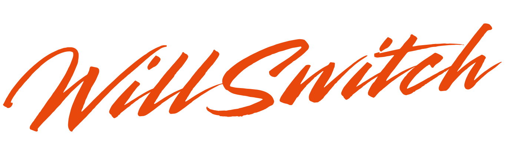

Van afhankelijkheid naar keuzevrijheid
Big Tech
Autonomy
prepare to switch
WillSwitch versnelt de overstap naar digitale autonomie door praktijkervaringen zichtbaar te maken. In gesprekken met organisaties onderzoeken we wat werkt, wat niet werkt, en welke stappen nodig zijn.
groeiend praktijkonderzoek